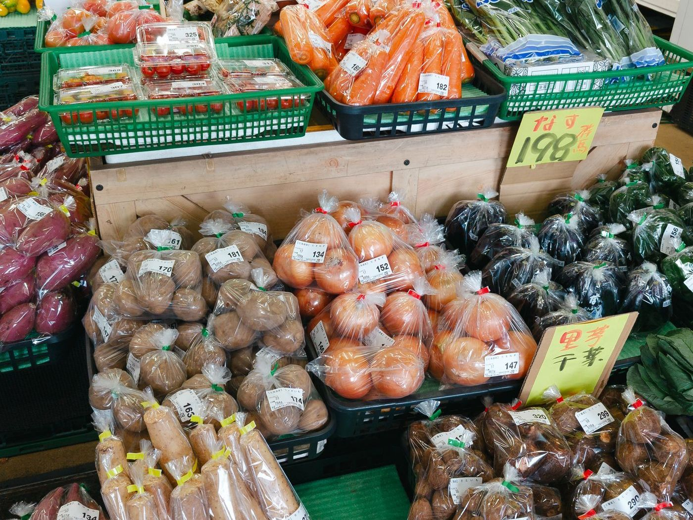
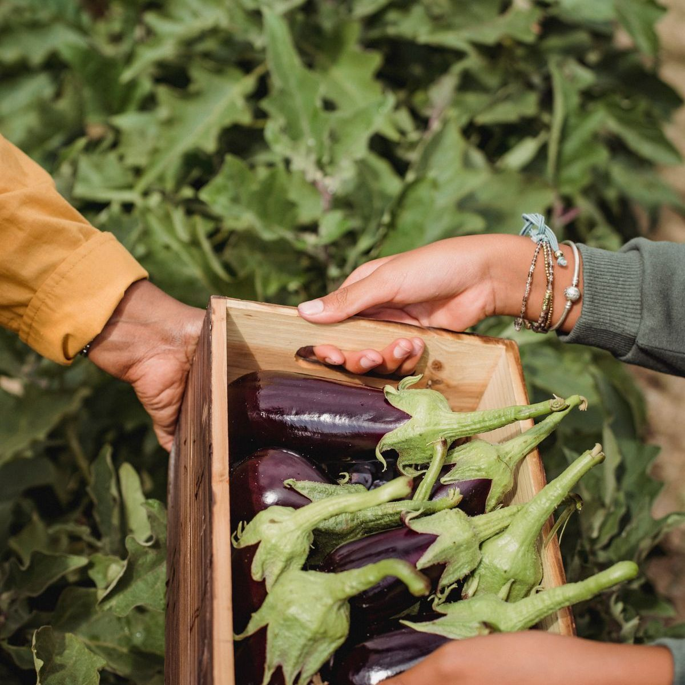
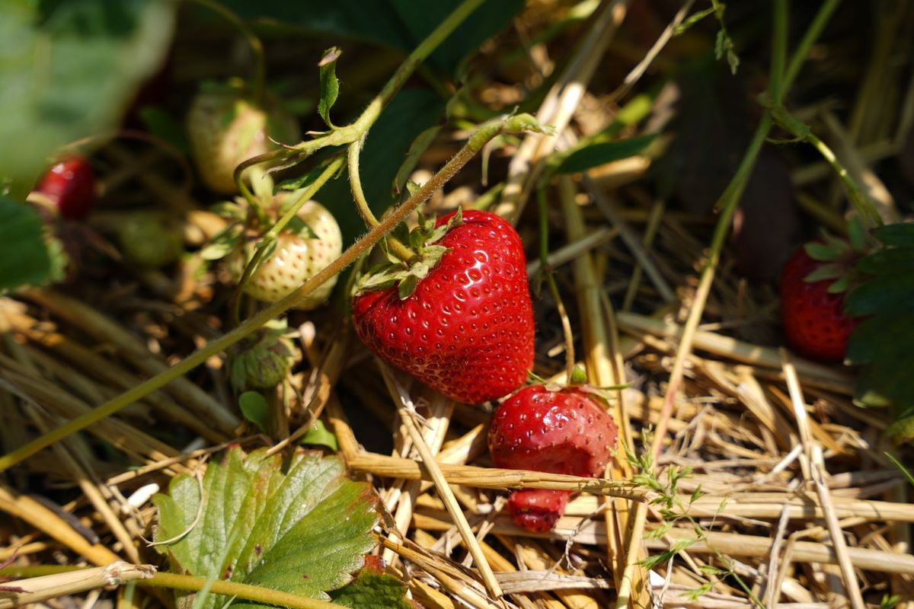
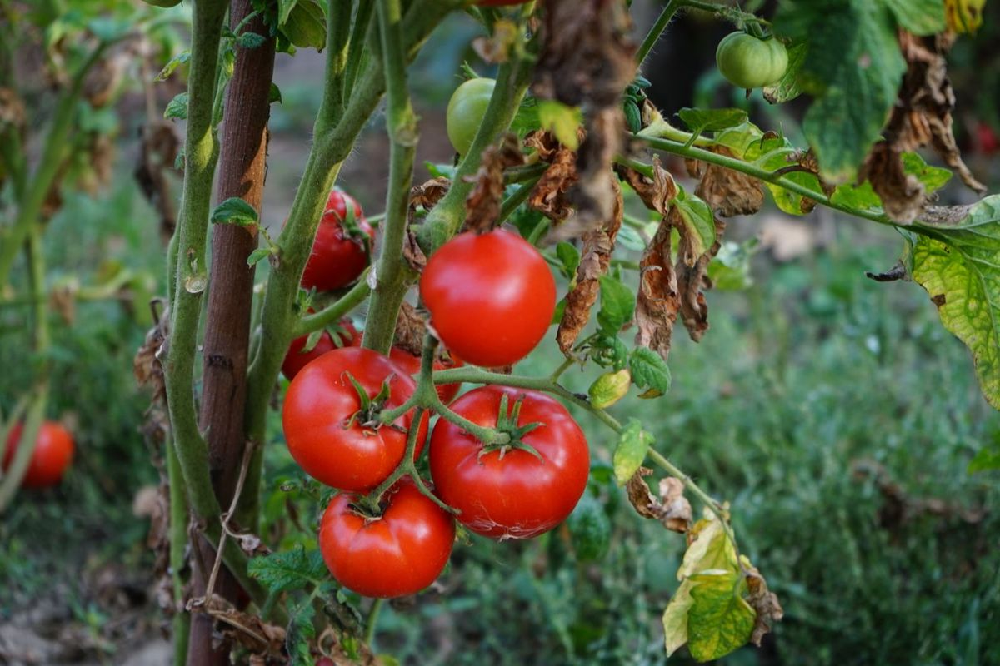
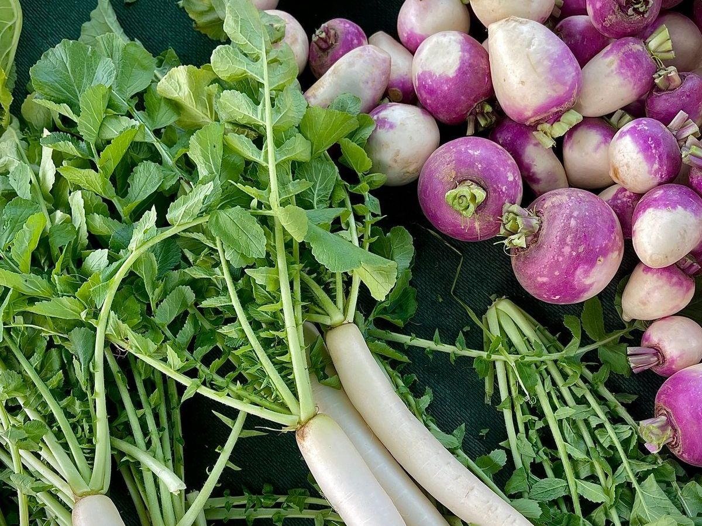

朝採り、その日のうちに。
夜明けとともに収穫した野菜が、開店前に棚へ。長い輸送や保管を経ないぶん、香りも歯ごたえも畑のままです。
畑
やさい畑は、南関町の農家が集まって運営している農産物直売所です。並んでいるのは、朝それぞれの畑で採れたばかりの野菜や果物、お米、苗もの、そして手づくりの加工品。それを農家が自分で持ち込み、自分で棚に並べます。
大きな市場を通らないから、採れたその日のうちにお客さまの手に届く。だから新鮮で、値段にも無理がない。「新鮮なものが安く買える」「珍しい果物に出会える」。そんな声に支えられて、週末には駐車場がいっぱいになる日もあります。


夜明けとともに収穫した野菜が、開店前に棚へ。長い輸送や保管を経ないぶん、香りも歯ごたえも畑のままです。
袋には、つくった人の名前。気に入ったら、次はその名前を探して。農家とお客さまの、小さなつながりが生まれます。
相場ではなく、手間と納得で。形は不揃いでも味の良いものが、それにふさわしい値段で棚に並びます。
うまかもんは、
畑が知っとる。
南関町は、熊本県の北のはずれ。福岡との県境にひらけた、山あいの小さな町です。朝晩の寒暖差ときれいな水、肥えた土。昔からこの土地の米は評判で、野菜も果物も、季節ごとに顔を変えながら育っていきます。
うまいものをいちばんよく知っているのは、市場でも、お店でもなく、畑。やさい畑は、その畑の声を、なるべくそのままお届けするための場所です。
旬
並ぶものは、その日の畑しだい。おおよその目安として、季節ごとの顔ぶれをご紹介します。
冬を越して甘みをたくわえた葉物から、春の芽ものへ。トマトやきゅうりなど、夏野菜の苗が並びはじめるのもこの季節です。

朝採りの夏野菜が、いちばんにぎやかに並ぶ季節。人気の品は早めに売り切れることもあるので、開店直後がおすすめです。

南関の新米が出そろう頃。芋や栗、柿など秋の実りが棚を埋め、早生のみかんも顔を出します。
霜に当たって甘みを増した根菜と葉物。鍋の材料はここでそろいます。年明けからは、いちごも並びはじめます。

※ 天候や収穫状況により、並ぶ品は日によって変わります。
思
棚に並ぶ野菜の向こうには、育てた人がいます。やさい畑に出荷する農家の言葉を、書に託して。
土に、
うそはつけん。

米米農家 ／ 南関町
朝採りの、
まんま。

菜トマト農家 ／ 小原
不揃いも、
畑の顔。

根根菜農家 ／ 南関町
店
野菜だけではありません。お米、苗もの、手づくりの加工品、パン。ちょっと腰をおろせるイートインコーナーもあります。

朝採りの野菜と、季節の果物。ときどき、珍しい果物に出会えることも。

寒暖差ときれいな水に育てられた、南関のお米。つくり手の名前入りで。

野菜の苗や季節の花。家の庭やプランターで、畑の続きをどうぞ。

漬物や味噌、お菓子など、農家の台所から生まれた手づくりの品々。

お客さまからも評判のパン。野菜と一緒に、朝ごはんの買い出しに。

買ったものをその場で。ドライブの途中に、ひと息つける休憩スペースです。
道
| 店名 | やさい畑 |
|---|---|
| 住所 | 〒861-0811 熊本県玉名郡南関町大字小原674-1 |
| 電話 | 0968-53-3399 |
| 営業時間 | 9:00〜19:00※ 季節や仕入れ状況により変わることがあります。 |
| 定休日 | お電話にてご確認ください |
| 設備 | 駐車場／EV充電設備／休憩スペース／トイレ／イートインコーナー |
来
きょうの畑を、見に来てください。
南関ICから車で約7分。朝いちばんの棚が、いちばんにぎやかです。